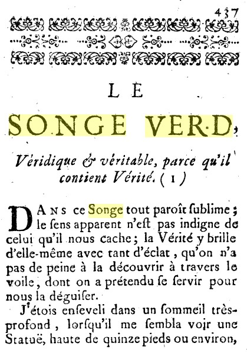

LE SONGE VERD de Bernard Trévisan
Véridique et véritable, parce qu'il contient Vérité
revu le 2 avril 2011
Il s'agit d'un texte attribué à Bernard de Trévise, purement spéculatif, dont L. Figuier a donné le contenu dans l'Alchimie et les alchimistes [pp. 49-54]. Le texte figure dans la
Bibliothèque des philosophes chimiques. Nouvelle edition, revûë, corrigée et augmentée de plusieurs philosophes, avec des Figures & des Notes pour faciliter l'intelligence de leur Doctrine. Par Monseiur J.M.D.R., Jean Maugin de Richenbourg,
publié par André Cailleau, Paris. 1740-54. 4 volumes. Il figure comme 14ème oeuvre dans le tome II [pp. 437-446].
L'édition originale se trouve dans Le Texte d'Alchimie et le Songe-Verd [Paris, chez Laurent d'Houry, M.DC.XCV.]

Ce texte est court mais d'une densité rarement atteinte dans l'univers de l'allégorie alchimique. Si l'on voulait y trouver un équivalent musical, on pourrait bien le qualifier de durchkomponiert, tant son développement parait unitaire. Là encore, les Surréalistes n'auraient point désavoué certains passages, notamment celui relatif à des anagrammes, dont le sens a été débusqué par E. Canseliet en son Alchimie expliquée sur ses textes classiques [Pauvert, 1972, pp. 113-114]. Outre Canseliet, on trouvera de très intéressants commentaires dans :
Écriture et ésotérisme dans un traité alchimique de la fin de la Renaissance : Le De Alchemiae difficultatibus de Theobald de Hoghelande [Frank Greiner, Bulletin de l'Association d'étude sur l'humanisme, la réforme et la renaissance, 1994, 38, pp. 45-71], texte disponible sur le site Persée.
Enfin, Fulcanelli écrit :
« Un ouvrage anonyme classique, que l’on attribue généralement auTrévisan, le Songe Verd, expose la pratique sous la forme traditionnelle de l’artisan transporté, pendant son sommeil, sur une terre céleste, peuplée d’habitants inconnus vivant au milieu d’une flore merveilleuse. » [Mystère des cathédrales, Pauvert, 1926]
Et cet ouvrage est essentiellement axé sur le Mercure, vu dans sa fonction dissolvante comme en témoigne ce pasage :
« ... et, considérant cette mer avec une grande attention, je reconnus que le sang, dont elle était composée, était vif et tout chaud »
Il s'agit là du Mercure philosophique où le sulphur
est accué de son Sal
.
____________________________________________________
Dans ce Songe tout paraît sublime ; le sens apparent n'est pas indigne de celui qu'il nous cache ; la Vérité y brille d'elle-même avec tant d'éclat, qu'on n'a pas de peine à la découvrir à travers le voile, dont on a prétendu se servir pour nous la déguiser.
J'étais enseveli dans un sommeil très profond, lorsqu'il me sembla voir une statue, haute de quinze pieds ou environ, représentant un vieillard [Mercure Philosophique, Saturne] vénérable, beau et parfaitement bien proportionné dans toutes les parties de son corps. Il avait de grands cheveux d'argent tous par ondes [l'Argent-vif des Sages, à différencier du vif-argent vulgaire] ; ses yeux étaient de turquoises fines, au milieu desquelles étaient enchâssées des escarboucles, dont l'éclat était si brillant, que je ne pouvais en soutenir la lumière. Ses lèvres étaient d'or, ses dents de perles orientales, et tout le reste du Corps était fait d'un rubis fort brillant. Il touchait du pied gauche un globe terrestre, qui paraissait le supporter. Ayant le bras droit élevé et tendu, il semblait soutenir, avec le bout de son doigt, un globe céleste au-dessus de sa tête, et de la main gauche il tenait une clef, faite d'un gros diamant brut.
Cet homme s'approchant de moi, me dit : Je suis le génie des Sages [i.e. Seganissegede], ne crains point de me suivre. Puis me prenant par les cheveux, de la main dont il tenait cette clef, il m'enleva et me fit traverser les trois Régions de l'Air, celle du Feu, et les Cieux de toutes les Planètes [on trouve une allégorie semblable dans l'Hermès Dévoilé de Cyliani où c'est une nymphe qui emporte l'Artiste]. Il me porta encore bien au-delà ; puis m'ayant enveloppé dans un tourbillon, il disparut, et je me trouvai dans une Ile, flottante sur une mer de sang. Surpris d'être dans un pays si éloigné, je me promenais sur le rivage [semblable allégorie se retrouve dans l'île du Cosmopolite] ; et, considérant cette mer avec une grande attention, je reconnus que le sang, dont elle était composée, était vif et tout chaud. Je remarquai même qu'un vent très doux, qui l'agitait sans cesse, entretenait sa chaleur, et excitait en cette mer un bouillonnement, qui causait à toute l'Ile un mouvement presque imperceptible. Ravi d'admiration de voir ces choses si extraordinaires, je réfléchissais sur tant de merveilles, quand j'aperçus plusieurs personnes de mon côté. Je m'imaginai d'abord qu'ils voulaient peut-être me maltraiter, et je me glissais sous un tas de jasmins pour me cacher; mais leur odeur m'ayant endormi, ils me trouvèrent et me saisirent. Le plus grand de la troupe, qui me semblait commander les autres, me demanda avec un air fier, qui m'avait rendu si téméraire que de venir des Pays-Bas dans ce très haut empire. Je lui racontai de quelle manière on m'y avait transporté. Aussitôt cet homme, changeant tout à coup de ton, d'air et de manières, me dit : Sois le bienvenu, toi qui fus conduit ici par notre très haut et très puissant Génie. Puis il me salua, et tous les autres ensuite, à la façon de leur pays, qui est de se coucher tout plat sur le dos, puis se mettre sur le ventre, et se relever. Je leur rendis le salut, mais selon la coutume de mon pays. Il me promit de me présenter au Hagacestaur, qui est leur empereur. Il me pria de l'excuser sur ce qu'il n'avait point de voiture pour me porter à la ville, dont nous étions éloignés d'une lieue. Il ne m'entretenait par le chemin que de la puissance et des grandeurs de leur Hagacestaur, qu'il disait posséder sept royaumes [les sept planètes], ayant choisi celui qui était au milieu des six autres, pour y faire sa résidence ordinaire [la Lune, correspondant au Mercure].
Comme il remarquait que je faisais difficulté de marcher sur des lis, des roses, des jasmins, des oeillets, des tubéreuses, et sur une quantité prodigieuse de fleurs les plus belles et les plus curieuses, qui croîssent même dans les chemins, il me demanda en souriant, si je craignais de faire mal à ces plantes. Je lui répondis, que je savais bien qu'il n'était point en elles d'âme sensitive, mais que comme elles étaient très rares dans mon pays, je répugnais à les fouler aux pieds.
Ne découvrant sur toute la Campagne que Fleurs et Fruits, je lui demandai où l'on semait leurs blés. Il me répondit, qu'ils ne les semaient point; mais que comme il s'en trouvait en quantité dans les terres stériles [donc, riches en silice], le Hagacestaur en faisait jeter la plus grande partie dans nos Pays-Bas pour nous faire plaisir, et que les bêtes mangeaient ce qui en restait. Que pour eux, ils faisaient leur pain des fleurs les plus belles ; qu'ils les pétrissaient avec la rosée [le dissolvant], et les cuisaient au soleil. Comme je voyais partout une si prodigieuse quantité de très beaux fruits, j'eus la curiosité de prendre quelques poires pour en goûter; mais il voulut m'en empêcher, en me disant qu'il n'y avait que les bêtes qui en mangeaient. Je les trouvais cependant d'un goût admirable. Il me présenta des pêches, des melons et des figues ; et il ne s'est jamais vu dans la Provence, dans toute l'Italie, ni dans la Grèce des fruits d'un si bon goût. Il me jura par le Hagacestaur que ces fruits venaient d'eux-mêmes, et qu'ils n'étaient aucunement cultivés, m'assurant qu'ils ne mangeaient rien autre chose avec leur pain.
Je lui demandai comment ils pouvaient conserver ces fleurs et ces fruits pendant l'hiver. Il me répondit qu'ils ne connaissaient point d'hivers ; que leurs années n'avaient que trois saisons seulement, savoir le printemps, l'été, et que de ces deux saisons se formait la troisième, à savoir l'automne, qui renfermait dans le corps des fruits l'esprit du printemps, et l'âme de l'été : Que c'était dans cette saison que se cueillaient le raisin et la grenade [fruit emblématique de la rouille des métaux roia], qui étaient les meilleurs fruits du pays.
Il me parut fort étonné lorsque je lui appris que nous mangions du bœuf, du mouton, du gibier, du poisson, et d'autres animaux. Il me dit que nous devions avoir l'entendement bien épais, puisque nous nous servions d'aliments si matériels. Il ne m'ennuyait aucunement d'entendre des choses si belles et si curieuses, et je les écoutais avec beaucoup d'attention. Mais étant averti de considérer l'aspect de la ville, dont nous n'étions alors éloignés que de deux cent pas, je n'eus pas sitôt levé les yeux pour la voir, que je ne vis plus rien, et que je devins aveugle, de quoi mon conducteur [l'évêque des Douze clefs de philosophie, l'ange du De lapide Philosophorum] se prit à rire, et ses compagnons de même.
Le dépit de voir que ces messieurs se divertissaient de mon accident, me faisait plus de chagrin que mon malheur même. S'apercevant donc bien que leurs manières ne me plaisaient pas, celui qui avait toujours pris soin de m'entretenir, me consola, en me disant d'avoir un peu de patience, et que je verrais clair dans un moment. Puis il alla chercher d'une herbe, dont il me frotta les yeux, et je vis aussitôt la lumière, et l'éclat de cette superbe ville, dont toutes les maisons étaient faites de cristal très pur [indication sur la silice, le « lien » du Mercure], que le soleil éclairait continuellement; car dans cette île il ne fut jamais de nuit [le feu permanent èporte alchimique]. On ne voulut point me permettre d'entrer dans aucune de ces maisons [symbole de l'athanor], mais bien d'y voir ce qui se passait à travers les murs qui étaient transparents. J'examinai la première maison ; elles sont toutes bâties sur un même modèle. Je remarquai que leur logement ne consistait qu'en un étage seulement composé de trois appartements [il y a un appartement pour chaque phase de l'oeuvre], chaque appartement ayant plusieurs chambres et cabinets de plein pied.
Dans le premier appartement paraissait une salle, ornée d'une tenture de damas, tout chamarré de galon d'Or, bordé d'une crépine de même. La couleur du fond de cette étoffe était changeante de rouge et de vert [le Lion vert de Ripley], rehaussé d'argent très fin, le tout couvert d'une gaze blanche ; ensuite étaient quelques cabinets, garnis de bijoux de couleurs différentes ; puis on découvrait une chambre toute meublée d'un beau velours noir, chamarré de plusieurs bandes de satin très noir et très luisant; le tout relevé d'un travail de jais, dont la noirceur brillait et éclatait fort.
Dans le second appartement se voyait une chambre, tendue d'une moire blanche [alkali fixe] ondée, enrichie et relevée d'une semence de perles orientales très fines. Ensuite étaient plusieurs cabinets, parés de meubles de plusieurs couleurs, comme de satin bleu, de damas violet, de moire citrine, et de taffetas incarnat.
Dans le troisième appartement était une chambre, parée d'une étoffe très éclatante, de pourpre [3ème Oeuvre] à fond d'or, plus belle et plus riche sans comparaison que toutes les autres étoffes que je venais de voir.
Je m'enquis où étaient le maître et la maîtresse du logis [les Soufres blanc et rouge]. On me dit qu'ils étaient cachés dans le fond de cette chambre, et qu'ils devaient passer dans une autre plus éloignée, qui n'était séparée de celle-ci que par quelques cabinets de communication ; que les meubles de ces cabinets étaient de couleurs toutes différentes, les uns étant d'un tapis couleur d'Isabelle, d'autres de moire citrine, et d'autres d'un brocard d'or très pur et très fin.
Je ne pouvais voir le quatrième appartement [la Pierre], parce qu'il doit être hors d'œuvre ; mais on me dit qu'il ne consistait qu'en une chambre, dont les meubles n'étaient qu'un tissu de rayons de soleil les plus épurés et concentrés dans cette étoffe de pourpre où je venais de regarder.
Après avoir vu toutes ces curiosités, on m'apprit comment se faisaient les mariages parmi les habitants de cette Ile. Le Hagacestaur ayant une très parfaite connaissance des humeurs et du tempérament de tous ses sujets, depuis le plus grand jusqu'au plus petit, il assemble les parents les plus proches, et met une jeune fille, pure et nette, avec un bon vieillard sain et vigoureux [c'est ce qu'enseignent tous les bons philosophes] ; puis il purge et purifie la fille, il lave et nettoie le vieillard, qui présente sa main à la fille, et la fille prend la main du vieillard ; puis on les conduit dans un de ces logis, dont on scelle la porte avec les mêmes matériaux dont le logis a été fait [c'est le vase de nature] : et il faut qu'ils restent ainsi enfermés ensemble neuf mois entiers [la Grande Coction], pendant lequel temps ils font tous ces beaux meubles qu'on m'a fait voir. Au bout de ce terme, ils sortent tous deux unis en un même corps ; et n'ayant plus qu'une âme, ils ne sont plus qu'un, dont la puissance est fort grande sur la terre [la Pierre]. Le Hagacestaur s'en sert alors pour convertir tous les méchants qui sont dans ses sept royaumes [les transmutations métalliques].
On m'avait promis de me faire entrer dans le palais du Hagacestaur [Guhr-Alcaest], de m'en faire voir les appartements, et un salon entre autres, où sont quatre statues aussi anciennes que le monde, dont celle qui est placée au milieu est le puissant Séganisségede [anagramme du Génie des Sages], qui m'avait transporté dans cette Ile. Les trois autres, qui forment un triangle à l'entour de celui-ci, sont trois Femmes, à savoir, Ellugaté [glu étale], Linémalore [lie normale], et Tripsarécopsern [corps, âme, esprit]. On m'avait aussi promis de me faire voir le temple où est la figure de leur Divinité, qu'ils appellent Elésel Vassergusine [les Signes, le Verseau] ; mais les coqs s'étant mis à chanter, les pasteurs conduisant leurs troupeaux aux champs, et les laboureurs attelant leurs charrues, firent un si grand bruit, [animation du Mercure] qu'ils me réveillèrent, et mon songe se dissipa entièrement.
Tout ce que j'avais vu jusqu'ici n'était rien en comparaison de ce qu'on promettait de me faire voir. Cependant je n'ai pas de peine à me consoler, lorsque je fais réflexion sur cet empire céleste, où le Tout-Puissant paraît assis dans son trône environné de gloire et accompagné d'anges, d'archanges, de chérubins, de séraphins, de trônes et de dominations. C'est là que nous verrons ce que l'œil n'a jamais vu, que nous entendrons ce que l'oreille n'aura jamais entendu, puisque c'est dans ce lieu que nous devons goûter une félicité éternelle, que Dieu lui-même a promise à tous ceux qui tâcherons de s'en rendre dignes, ayant tous été créés pour participer à cette gloire. Faisons donc tous nos efforts pour la mériter. Loué soit Dieu.Fin du Songe Verd.